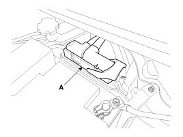
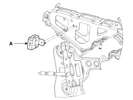
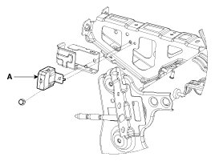
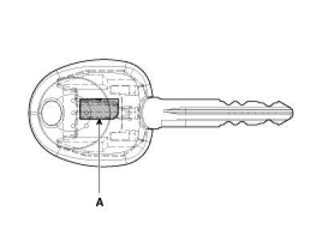
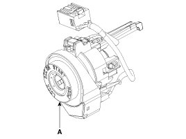

Immobilizer System
Description
The immobilizer system will disable the vehicle unless the proper ignition key is used. In addition to the currently available anti-theft systems such as car alarms, the immobilizer system aims to drastically reduce the rate of auto theft.
1. Encrypted SMARTRA type immobilizer
A. The SMARTRA system consists of a passive challenge - response (mutual authentication)transponder located in the ignition key, an antenna coil, a encoded SMARTRA unit, an indicator light and the PCM(ECM).
B. The SMARTRA communicates to the PCM(ECM) (Engine Control Module) via a dedicated communications line. Since the vehicle engine management system is able to control engine mobilization, it is the most suitable unit to control the SMARTRA.
C. When the key is inserted in the ignition and turned to the ON position, the antenna coil sends power to the transponder in the ignition key. The transponder then sends a coded signal back through the SMARTRA unit to the PCM(ECM).
D. If the proper key has been used, the PCM(ECM) will energize the fuel supply system. The immobilizer indicator light in the cluster will simultaneously come on for more than five seconds, indicating that the SMARTRA unit has recognized the code sent by the transponder.
E. If the wrong key has been used and the code was not received or recognized by the PCM(ECM) the indicator light will continue blinking for about five seconds until the ignition switch is turned OFF.
F. If it is necessary to rewrite the PCM(ECM) to learn a new key, the dealer needs the customer's vehicle, all its keys and the GDS equipped with an immobilizer program card. Any key that is not learned during rewriting will no longer start the engine.
G. The immobilizer system can store up to eight key codes.
H. If the customer has lost his key, and cannot start the engine, contact Hyundai motor service station.
Components Operations
PCM (Power Train Control Module)
1. The PCM(ECM) (A) carries out a check of the ignition key using a special encryption algorithm, which is programmed into the transponder as well as the PCM(ECM) simultaneously. Only if the results are equal, the engine can be started. The data of all transponders, which are valid for the vehicle, are stored in the PCM(ECM).
ERN (Encrypted Random Number) value between EMS and encrypted smartra unit is checked and the validity of coded key is decided by EMS.

ENCRYPTED SMARTRA unit (A)
The SMARTRA carries out communication with the built-in transponder in the ignition key. This wireless communication runs on RF (Radio frequency of 125 kHz). The SMARTRA is mounted behind of the crash pad close to center cross bar.
The RF signal from the transponder, received by the antenna coil, is converted into messages for serial communication by the SMARTRA device. And, the received messages from the PCM(ECM) are converted into an RF signal, which is transmitted to the transponder by the antenna.
The SMARTRA does not carry out the validity check of the transponder or the calculation of encryption algorithm. This device is only an advanced interface, which converts the RF data flow of the transponder into serial communication to the PCM(ECM) and vice versa.
[USA]

[CANADA]

TRANSPONDER (Built-in keys)
The transponder (A) has an advanced encryption algorithm. During the key teaching procedure, the transponder will be programmed with vehicle specific data. The vehicle specific data are written into the transponder memory. The write procedure is once only; therefore, the contents of the transponder can never be modified or changed.

Antenna coil
The antenna coil (A) has the following functions.
- The antenna coil supplies energy to the transponder.
- The antenna coil receives signal from the transponder.
- The antenna coil sends transponder signal to the SMARTRA.
It is located directly in front of the steering handle lock.
